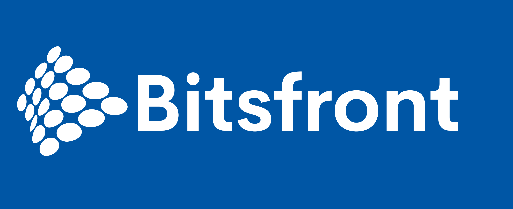
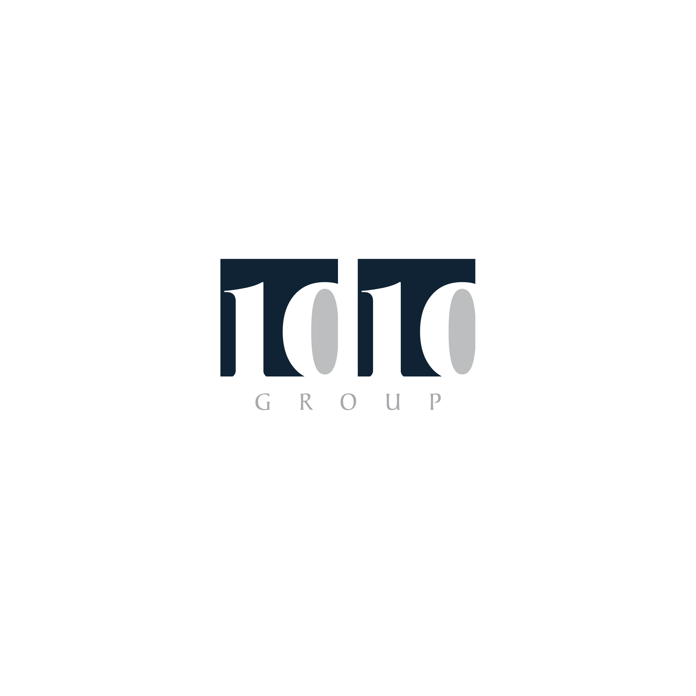

01
Managed IT Services
End-to-end operational support that keeps systems stable, efficient, and aligned with business needs.
Managed Service Provider & General Services
Netfield International Links delivers dependable managed services and digital security support for organizations that need resilience, visibility, and operational confidence.
Who We Are
Netfield International Links is focused on helping businesses strengthen operational resilience through smart service management and proactive security practices. We support organizations with dependable, technology-backed solutions tailored to their environment.
Our Services
End-to-end operational support that keeps systems stable, efficient, and aligned with business needs.
Flexible support services that help businesses run smoothly while reducing operational friction.
Practical guidance and monitoring solutions that strengthen defenses and improve response readiness.
Core Solutions
Actionable insight to identify emerging risks and improve awareness before threats escalate.
Structured response processes that support faster investigation, containment, and recovery.
Visibility across digital and operational assets to strengthen governance and reduce exposure.
Continuous monitoring and alerting for organizations that need around-the-clock operational support.
Our Partners

